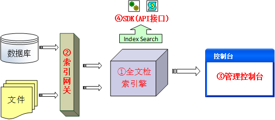
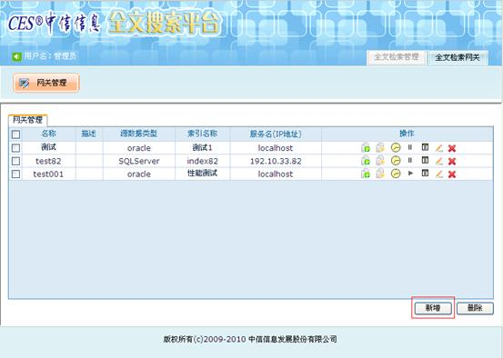
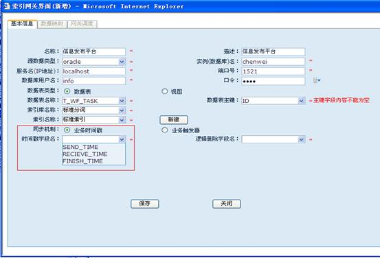

全文检索平台（CES FSEngine）
在对电子文件的管理过程中，必须实现对中文的快速检索，并且具有在模糊查询条件下对中文检索快速响应的能力，用普通的关系型数据库难以达到理想的效果，全文检索引擎是必然的选择，它能够从海量非结构化信息中快速、准确获得用户所需信息，从而满足用户对于海量档案数据快速检索的需要。
在对大量非结构化的电子文件检索过程中，采用普通的数据库检索根本无法满足要求，为此，我司开发了自主知识产权的全文检索引擎，实现了中量级数据记录的全文索引创建能力：
- 支持增量索引的创建；
- 支持同义词检索；
- 支持数据库和文件混合索引的创建；
- 支持多达23万条汉词词组的切词和分词处理；
- 支持数据库网关功能，自动监控业务数据的变化情况；
- 支持txt、html、xml、xls、doc、pdf等常见格式的全文索引。
中信全文检索引擎的功能构成如下图所示：

整个软件由检索引擎、索引网关、管理控制台和全文检索SDK（API）四部分组成四部分组成：
- 检索引擎：整个软件的核心部分，负责全文检索的索引和检索等核心业务操作；
- 索引网关：可以动态的从业务系统中提取业务数据生成索引文件，支持数据库和文件混合索引的创建；
- 管理控制台：主要负责对全文检索引擎的业务建模，包括索引库、索引、同义词的维护以及各类系统参数的设置管理；
- SDK（API）：提供上层应用调用的程序接口，包括全文检索、同义词搜索、索引维护等等，提供Java API和Jsp Tag等接口方式。
管理控制台界面如下：
网关管理：

数据库网关配置：

主要特点：
- 1. 具有不亚于商业全文检索引擎的检索性能，百万级全文检索100用户并发情况下可以达到毫秒级响应；
- 2. 提供可维护的检索分词库和同义词库，预收录分词库词条23万，同义词库词条5万；
- 3. 支持txt、html、xml、xls、doc、pdf等常见文本格式的全文索引；
- 4. 支持以时间戳和业务触发器为基本规则的增量索引建立，定时自动更新，也可以手动更新；
- 5. 提供索引网关功能，可以自动监听业务数据的变化情况，触发索引的更新。